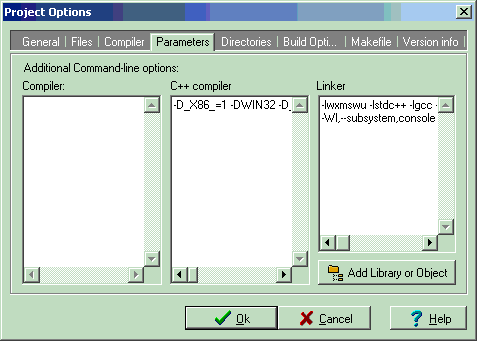

Library filenames under the GNU system are in the form libNAME.a
(where NAME is the name of the library, like wsock32).
For example, if you want to use the wsock32 (winsock) library, the
filename will be libwsock32.a
The gcc parameter for linking a library is –NAME,
so for linking with the wsock32 library we would give GCC the –lwsock32
parameter.
MS VC++
MS libraries are in the form NAME.lib
(where NAME is the name of the library, like wxmsw28). MS VC uses the
entire name so, for example, linking the wxWidgets 2.8.9 library would
be wxmsw28.lib.
Linking your library:
Click on Project menu then on Options.
Now click on the Parameters sheet.

In the Linker edit box, you can specify as
many libraries as you need. You can also pass the complete filename of
the library.
Example : –lm –lwsock32 c:\libs\mylib.a
c:\objs\myobj.o
You may also use the Add Library or Object
button to select your library from a list.